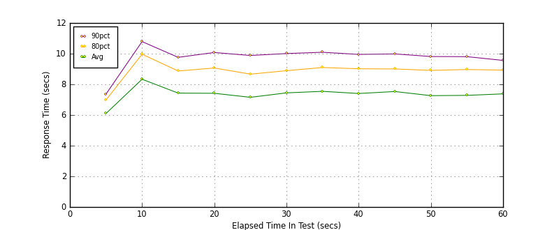
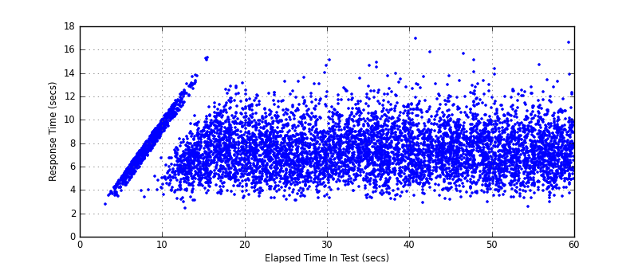
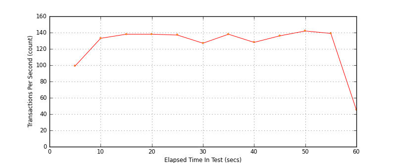

Performance Results Report
Summary
transactions: 8529
errors: 0
run time: 60 secs
rampup: 0 secs
test start: 2017-05-24 17:45:23
test finish: 2017-05-24 17:46:20
time-series interval: 5 secs
workload configuration:
| group name | threads | script name |
|---|
| user_group-21 | 40 | redis_stress.py |
| user_group-20 | 40 | redis_stress.py |
| user_group-23 | 40 | redis_stress.py |
| user_group-22 | 40 | redis_stress.py |
| user_group-25 | 40 | redis_stress.py |
| user_group-24 | 40 | redis_stress.py |
| user_group-2 | 40 | redis_stress.py |
| user_group-3 | 40 | redis_stress.py |
| user_group-1 | 40 | redis_stress.py |
| user_group-6 | 40 | redis_stress.py |
| user_group-7 | 40 | redis_stress.py |
| user_group-4 | 40 | redis_stress.py |
| user_group-5 | 40 | redis_stress.py |
| user_group-8 | 40 | redis_stress.py |
| user_group-9 | 40 | redis_stress.py |
| user_group-10 | 40 | redis_stress.py |
| user_group-11 | 40 | redis_stress.py |
| user_group-12 | 40 | redis_stress.py |
| user_group-13 | 40 | redis_stress.py |
| user_group-14 | 40 | redis_stress.py |
| user_group-15 | 40 | redis_stress.py |
| user_group-16 | 40 | redis_stress.py |
| user_group-17 | 40 | redis_stress.py |
| user_group-18 | 40 | redis_stress.py |
| user_group-19 | 40 | redis_stress.py |
All Transactions
Transaction Response Summary (secs)
| count | min | avg | 80pct | 90pct | 95pct | max | stdev |
|---|
| 8529 | 2.408 | 7.382 | 8.983 | 9.965 | 10.824 | 16.944 | 1.952 |
Interval Details (secs)
| interval | count | rate | min | avg | 80pct | 90pct | 95pct | max | stdev |
|---|
| 1 | 497 | 99.40 | 2.767 | 6.097 | 6.978 | 7.361 | 7.698 | 8.050 | 1.008 |
| 2 | 668 | 133.60 | 2.408 | 8.332 | 9.965 | 10.788 | 11.290 | 13.027 | 1.999 |
| 3 | 692 | 138.40 | 3.133 | 7.428 | 8.869 | 9.761 | 10.761 | 15.324 | 1.958 |
| 4 | 690 | 138.00 | 3.332 | 7.415 | 9.066 | 10.077 | 10.963 | 13.147 | 1.952 |
| 5 | 689 | 137.80 | 3.076 | 7.154 | 8.665 | 9.881 | 10.643 | 13.599 | 1.930 |
| 6 | 636 | 127.20 | 3.279 | 7.443 | 8.889 | 10.009 | 10.906 | 15.125 | 1.890 |
| 7 | 694 | 138.80 | 3.215 | 7.544 | 9.098 | 10.092 | 10.853 | 14.894 | 1.979 |
| 8 | 642 | 128.40 | 2.931 | 7.402 | 9.015 | 9.952 | 10.908 | 16.944 | 1.996 |
| 9 | 684 | 136.80 | 3.140 | 7.531 | 9.003 | 9.983 | 10.957 | 15.645 | 1.936 |
| 10 | 710 | 142.00 | 2.932 | 7.263 | 8.910 | 9.815 | 10.472 | 14.349 | 1.943 |
| 11 | 698 | 139.60 | 2.535 | 7.281 | 8.966 | 9.805 | 10.668 | 14.660 | 1.933 |
| 12 | 229 | 45.80 | 3.414 | 7.378 | 8.928 | 9.562 | 10.658 | 16.625 | 1.851 |
Graphs
Response Time: 5 sec time-series

Response Time: raw data (all points)

Throughput: 5 sec time-series
